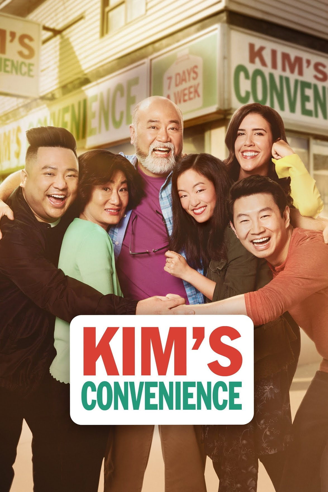

Kim's Convenience is a Canadian television sitcom that aired on CBC Television from October 2016 to April 2021. It depicts the Korean Canadian Kim family that runs a convenience store in the Moss Park neighbourhood of Toronto: parents "Appa" (Paul Sun-Hyung Lee) and "Umma" (Jean Yoon) – Korean for dad and mom, respectively – along with their daughter Janet (Andrea Bang) and estranged son Jung (Simu Liu). Other characters include Jung's friend and coworker Kimchee (Andrew Phung), his manager Shannon (Nicole Power) and Janet's friend Gerald Tremblay (Ben Beauchemin). The series is based on Ins Choi's 2011 play of the same name.
The first season was filmed from June to August 2016 at Showline Studios in Toronto. It is produced by Thunderbird Films in conjunction with Toronto's Soulpepper Theatre Company, with Lee and Yoon reprising their roles from the play.[1] Scripts were created by Choi and Kevin White, who previously wrote for Corner Gas.